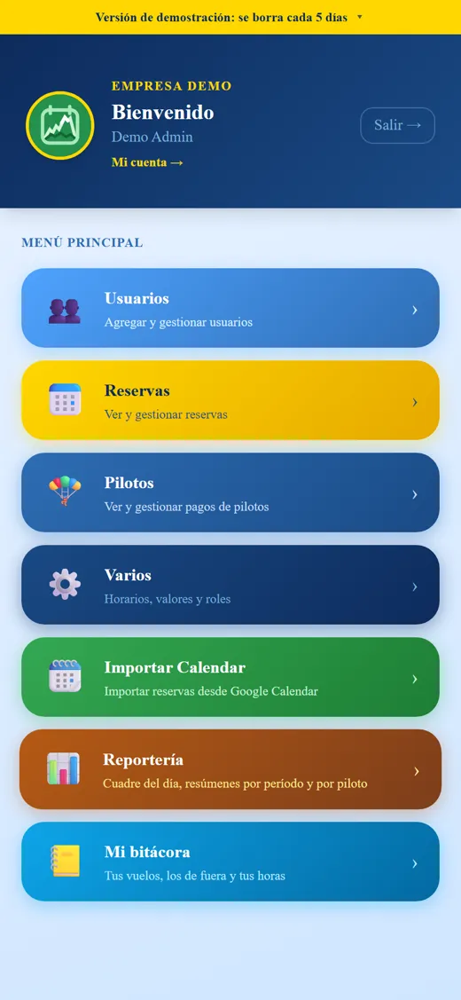
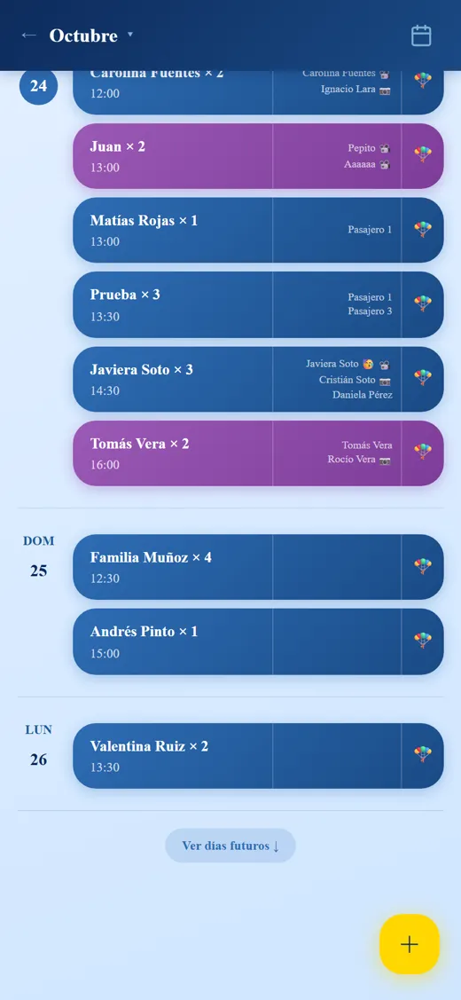
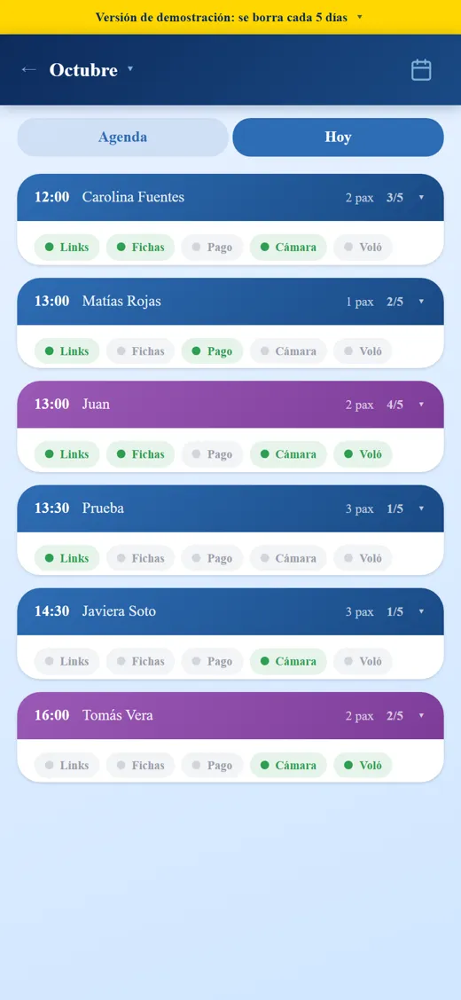
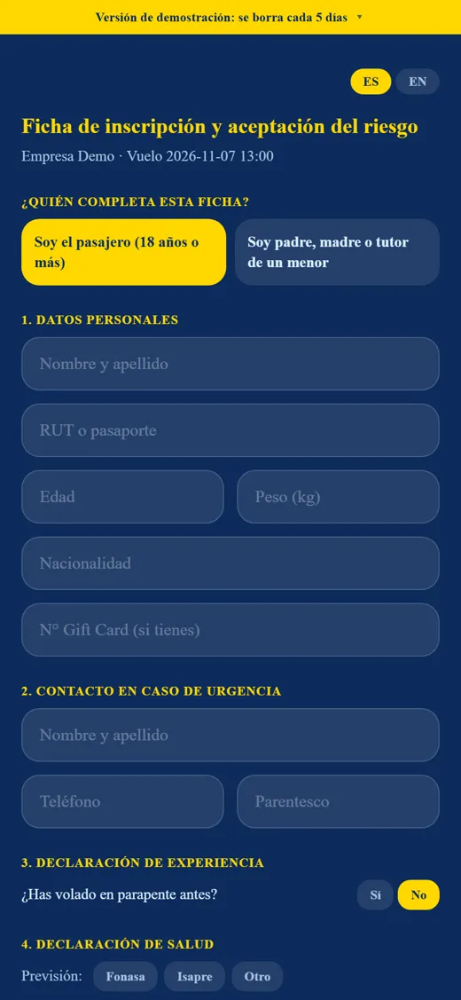
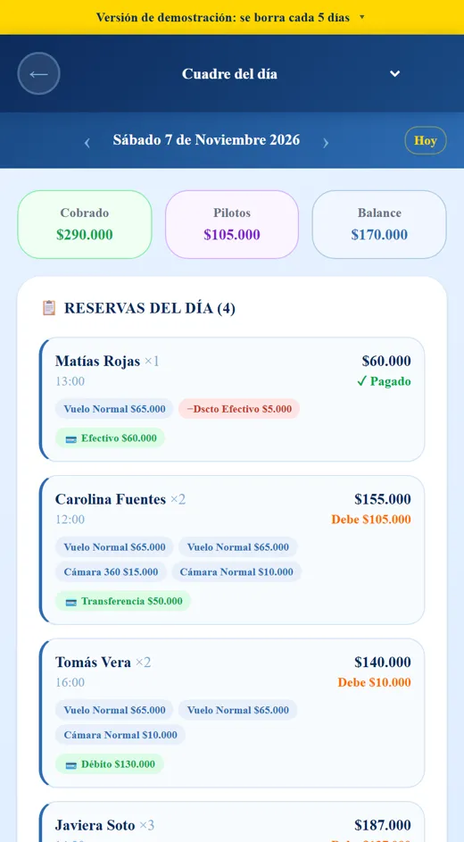
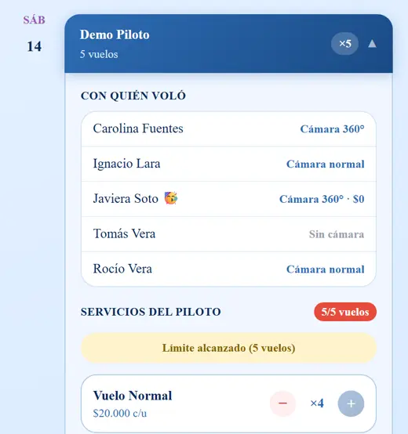
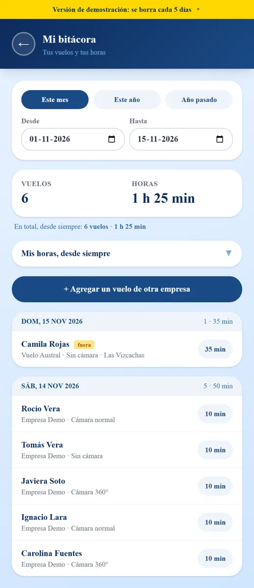

Siete pantallas que cubren el día completo: desde que te escriben para reservar hasta que cuadras la caja y le pagas a tus guías. Todo desde el teléfono, en terreno, con una mano.
Las imágenes son de la versión de demostración, que usa el rubro parapente. En tu empresa las palabras cambian solas: en rafting dice bajada, guía y tripulante.

Una cuenta por persona y un menú que depende de su rol: quien coordina ve las reservas, quien administra ve además la plata y la configuración, y un guía ve solo lo que le toca.

Cada día con sus horarios y lo tomado en cada uno. Abres una reserva y ahí está todo: quién viene, cuántos, qué servicios lleva, cuánto abonó y cuánto queda por cobrar.

La pestaña que se usa en el cerro, en el río o en el muelle: a quién le falta la ficha, quién ya pagó, quién lleva cámara, con qué guía va cada uno y quién ya salió.

El cliente abre un link, completa sus datos y acepta. Queda guardada la evidencia de esa firma —cuándo, desde dónde y qué texto aceptó— como pide el reglamento de turismo aventura, y se conserva el tiempo que corresponde sin que archives un papel.

Cuánto entró y por qué medio, qué quedó por cobrar, los gastos del día y lo que les toca a los guías. Y los mismos números por período: día a día, por guía, por servicio y por método de pago.

Por día: con quién salió cada uno, qué le corresponde por eso y qué se le ha pagado. Sin anotar nada aparte, porque sale de lo que ya marcaste en la operación.

Cada salida que hace le suma horas sin que anote nada, y puede agregar las que hizo por fuera. Hoy es para parapente; los otros rubros tendrán el suyo.
Lo que hace que esto funcione el día que hay cuarenta personas y dos teléfonos.
Cada empresa ve lo suyo y nada más, y eso lo decide el sistema por dentro, no la pantalla. No se comparten datos entre clientes ni se usan para otra cosa.
Parapente, rafting, cabalgatas, trekking, buceo, navegación o tours: las palabras de la app cambian según tu actividad. Nadie tiene que ir traduciendo.
WhatsApp para hablar con el cliente, Mercado Pago para cobrar, Google Calendar para traer lo que ya tenías agendado y una API para tu propia web.
Pensado para el teléfono y para una mano ocupada. Si alguien del equipo no sabe dónde apretar, el botón de ayuda abre el manual justo en esa pantalla.
Cancelar una reserva pide el motivo y la guarda; los cambios quedan anotados con quién los hizo. Cuando algo no calza, se puede reconstruir.
Llenas un formulario con los datos de tu empresa, te dejamos la cuenta andando con tus horarios y tus precios, y el mismo día puedes estar tomando reservas.
La demo está abierta: entra, crea una reserva, manda una ficha y mira el cuadre del día. Lo que cargues se borra solo. Si después quieres el tuyo, lo dejamos listo con tus horarios, tus servicios y tu gente.